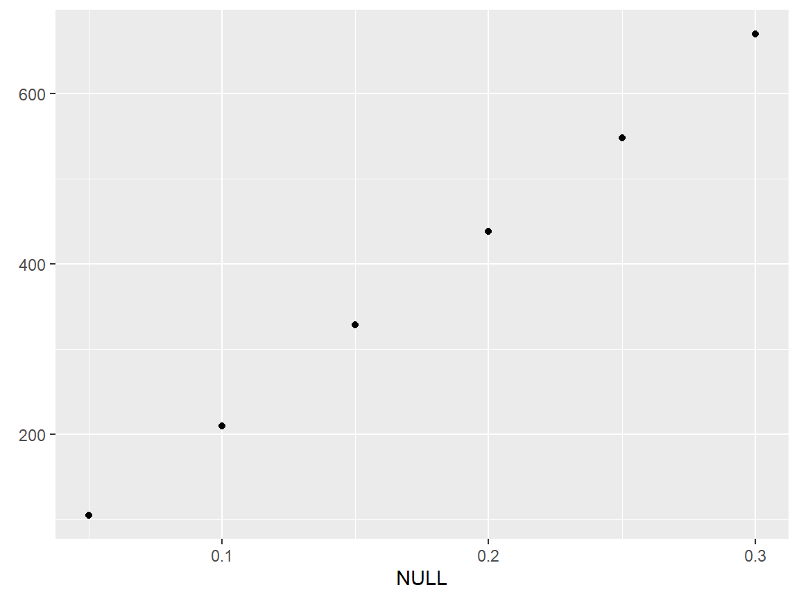
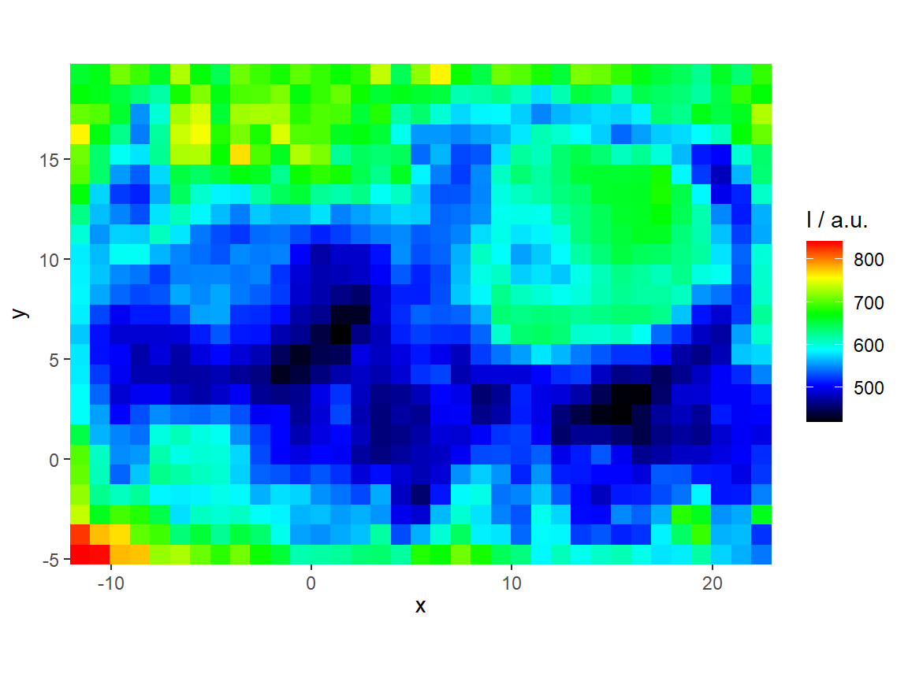

hyperSpec Plotting Examples with ggplot2
2017-07-23
Load packages
library(hyperSpec)
library(spHelper)
library(plotly)
qplotspc
data(chondro, package = "hyperSpec")
#> Warning in data(chondro, package = "hyperSpec"): data set 'chondro' not
#> found
qplotspc(chondro)
#> Warning in qplotspc(chondro): Number of spectra exceeds spc.nmax. Only the
#> first 10 are plotted.
qplotspc(paracetamol, c(2800 ~ max, min ~ 1800)) +
scale_x_reverse(breaks = seq(0, 3200, 400)) 
# +
# theme(strip.text = element_blank(),
# strip.background = element_blank())
qplotspc(hyperSpec::aggregate(chondro, chondro$clusters, mean),
mapping = aes(x = .wavelength,
y = spc,
colour = clusters)) +
facet_grid(clusters ~ .)
qplotspc(hyperSpec::aggregate(chondro, chondro$clusters, mean_pm_sd),
mapping = aes(x = .wavelength,
y = spc,
colour = clusters,
group = .rownames)) +
facet_grid(clusters ~ .)
qplotc
qplotc(flu)
#> Warning in qplotc(flu): Intensity at first wavelengh only is used.
qplotc(flu[,,440])
qplotc(flu) + geom_smooth(method = "lm", size = .5)
#> Warning in qplotc(flu): Intensity at first wavelengh only is used.
qplotmap
qplotmap(chondro)qplotmap(chondro) + scale_fill_gradientn(colours = alois.palette())
## works also with discrete x or y axis:
qplotmap(chondro,
mapping = aes(x = x,
y = as.factor(y),
fill = spc)
)
qplotmixmap
qplotmap with colour mixing for multivariate overlay
chondro <- chondro - spc.fit.poly.below(chondro)
#> Fitting with npts.min = 15
chondro <- sweep(chondro, 1, apply(chondro, 1, mean), "/")
chondro <- sweep(chondro, 2, apply(chondro, 2, quantile, 0.05), "-")
qplotmixmap(chondro[,,c(940, 1002, 1440)],
purecol = c(colg = "red",
Phe = "green",
Lipid = "blue"))
#> Warning: Removed 300 rows containing missing values (geom_point).